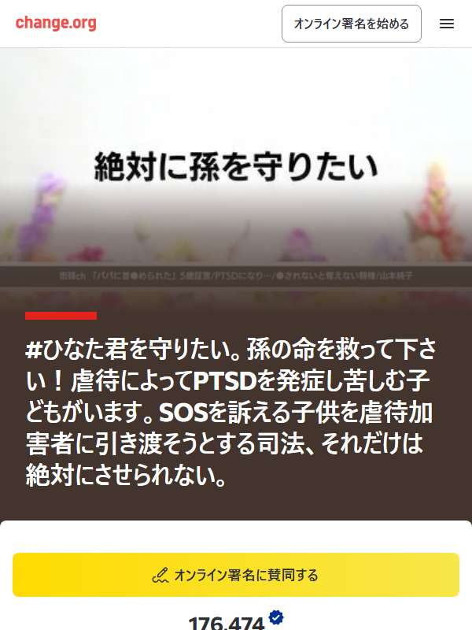

← 署名の一覧（署名掲示板）
⭐おすすめリコール
#ひなた君を守りたい。孫の命を救って下さい！虐待によってPTSDを発症し苦しむ子どもがいます。SOSを訴える子供を虐待加害者に引き渡そうとする司法、それだけは絶対にさせられない。

賛同者 176,487 人前回（9/29）から +13人
⚠️ 署名する前にご確認ください
- 下の「どんな署名？」と「発起人」を必ず確認してから署名してください。
- change.org はご自身で判断してください。
📝 どんな署名？
🆘皆さんのお力をお借りしなければ、すでに救えない状況にまできています！🚨 🚨緊急連絡🚨 裁判官に対する意見、申し立てを、皆さんからもお願いできませんでしょうか、 当事者でなくても、裁判に対する意見や、申し立てを行うことができます。↓ 今般の高知家庭裁判所の審議状況で、担当裁判官による恣意的、不適切…
※ 署名ページの本文の書き出しです。全文は署名ページでご確認ください。
📋 基本情報
- 発起人
- 山本 純子
- 開始日
- 2025年4月11日
- 目標
- 200,000人
- 署名サイト
- change.org
📈 署名数の推移